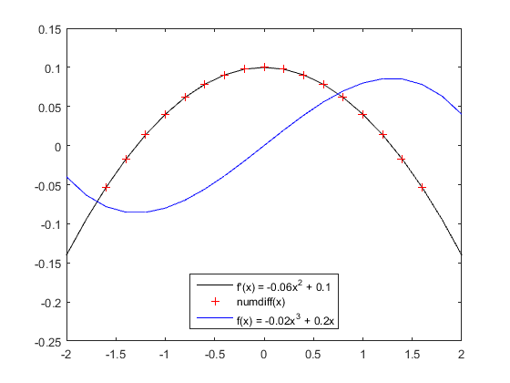

numdiff
Compute first and second order derivative using possibly unequally spaced data.
Contents
Syntax
- [df d2f] = numdiff(x, f)
Description
numdiff computes first and second order derivatives using a 5th order formula that accounts for possibly unequally spaced data. Because a 5th order centered difference formula is used, numdiff returns NaNs for the first 2 and last 2 points in the input vector for x.
Inputs
- x - a vector of values of x
- f - a vector of values of the function f for which derivatives are to be computed. Must be the same length as x.
Outputs
- df - a vector of length(x) containing the first derivative of f at each point x except at the first 2 and last 2 points.
- d2f - a vector of length(x) containing the second derivative of f at each point x except at the first 2 and last 2 points.
Example
x = -2:0.2:2; N = length(x); r = rand(size(x))*0.02 - 0.01; f = (-0.02*x.^3 +0.1.*x); [df, d2f] = numdiff(x, f); mf = -0.06*x.^2+0.1; figure plot(x,mf,'k-') hold on plot(x(3:(N-2)),df(3:(N-2)),'r+') plot(x,f,'b-') ylim([-0.25 0.15]) legend({'f''(x) = -0.06x^2 + 0.1','numdiff(x)','f(x) = -0.02x^3 + 0.2x'},'Location','South');
References
[1] M. K. Bowen, R. Smith, "Derivative formulae and errors for non-uniformly spaced points", Proceedings of the Royal Society A, vol. 461 pp 1975-1997, July 2005. DOI: 10.1098/rpsa.2004.1430
Copyright 2014 Sandia National Laboratories